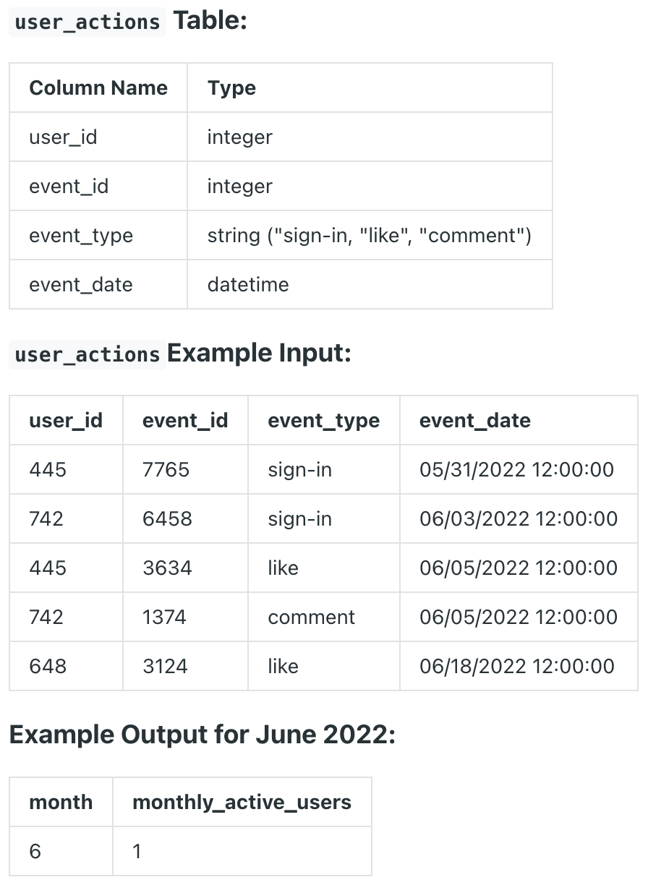

Question sourced from DataLemur.com.
Database: PostgreSQL
Assume you're given a table containing information on Facebook user actions. Write a query to obtain number of monthly active users (MAUs) in July 2022, including the month in numerical format "1, 2, 3".

/*
My strategy: Parse out numerical month from the event date, then
filter by rows with an event month of 6 (June) and 7 (July). Use
the LAG() window function to create a column accessing the previous
event month for each user, and wrap this result query in a CTE.
Count the unique users in the CTE that have a row where the current
event month is July (7), and the previous event month is June (6).
(There should only be one transition point for each user.)
*/
WITH months_lag AS (
SELECT user_id,
EXTRACT(MONTH FROM event_date) AS current_month,
LAG(EXTRACT(MONTH FROM event_date), 1) OVER (
PARTITION BY user_id
ORDER BY EXTRACT(MONTH FROM event_date)
) AS previous_month
FROM user_actions
WHERE EXTRACT(MONTH FROM event_date) IN (6, 7)
)
SELECT current_month,
COUNT(DISTINCT user_id) AS monthly_active_users
FROM months_lag
WHERE current_month = 7 and previous_month = 6
GROUP BY current_month;